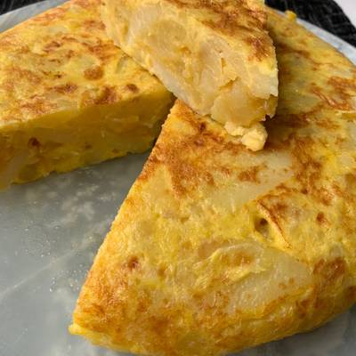

Spanish Potato Omelette

Crispy, fried potatoes and eggs make up this popular Spanish Omelette (Tortilla) recipe, perfect for picnics, parties, bbq’s, or your traditional Tapas menu!
Ingredients for 4 people:
- 4 medium potatoes
- 4 or 5 eggs
- 1 medium onion
- ¼ l of olive oil
- Salt
Steps:
- Peel, wash and dry the potatoes.
- Cut in thin slices and place in a deep pan with olive oil at medium heat so that they cook slowly.
- Add the finely chopped onion.
- Fry slowly with the potatoes until they are soft and beginning to
brown. It is best to stir using a skimming spoon to cut up the vegetables.
- After 10 minutes strain off the oil. Beat the eggs with a pinch of salt in an earthenware bowl.
- Add the potato and onion mix.
- Put the pan back on the heat with a little of the oil and add the egg and potato mix.
- Cover the pan and leave to cook on a low flame for 5 to 10 minutes until the bottom begins to brown.
- Turn the omelette upside down using a lid and then put it back in the pan on the other side so that it slowly sets. It should brown on both sides.